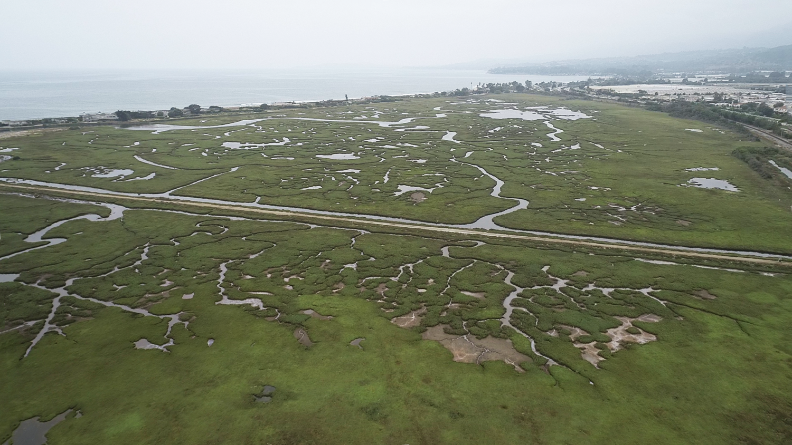
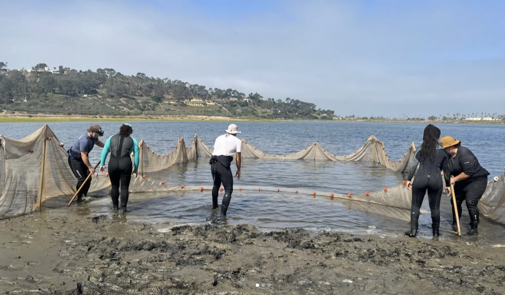
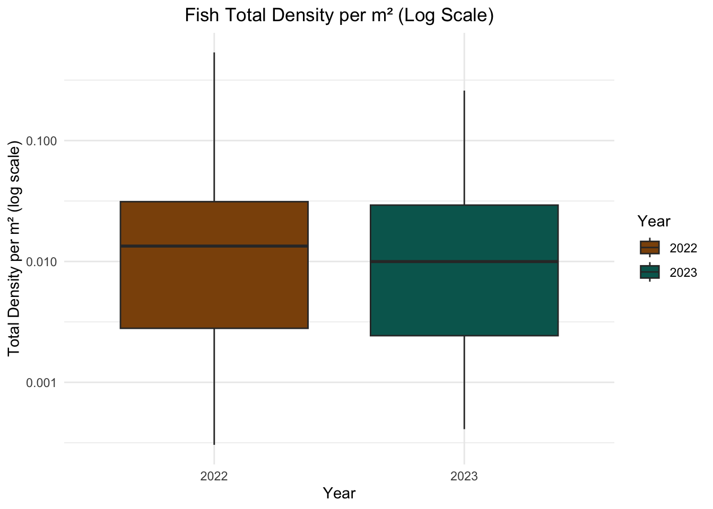
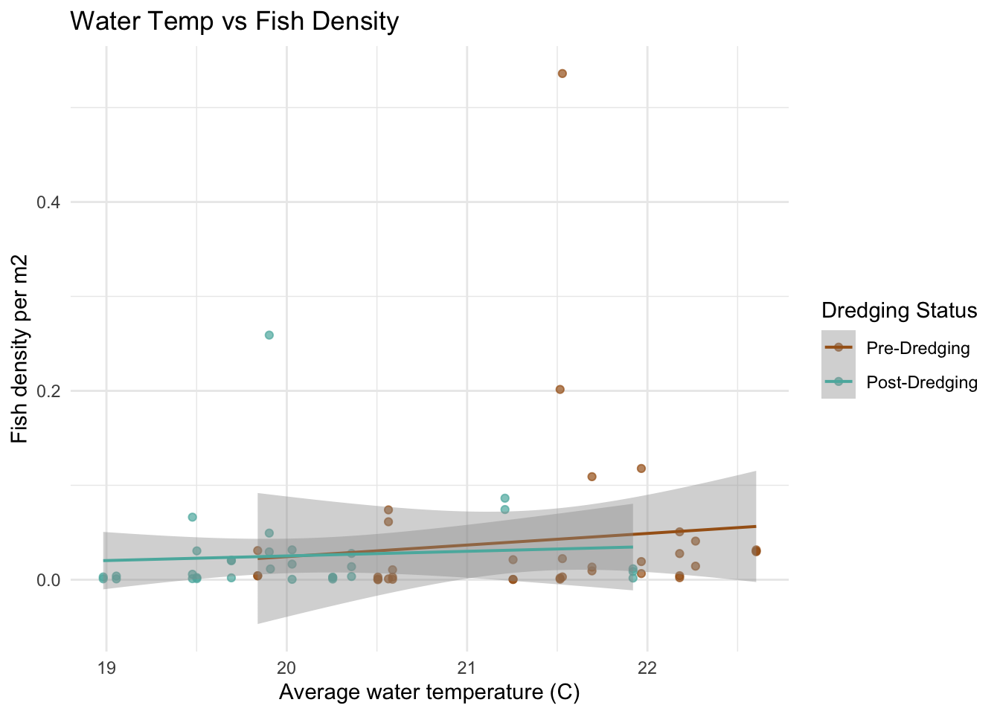
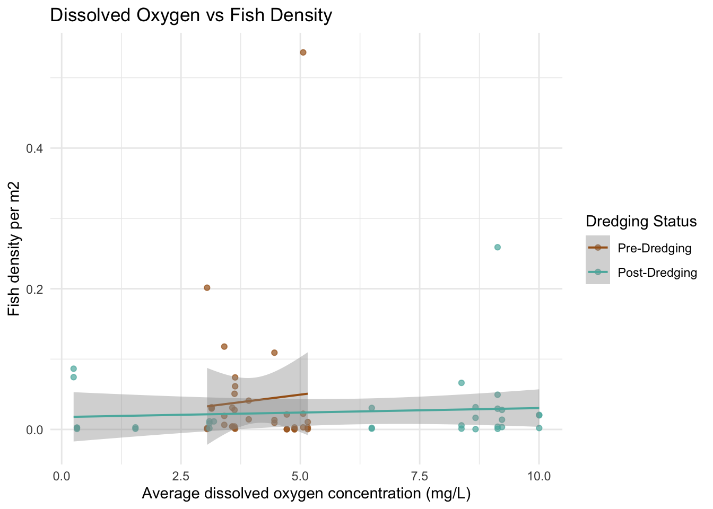
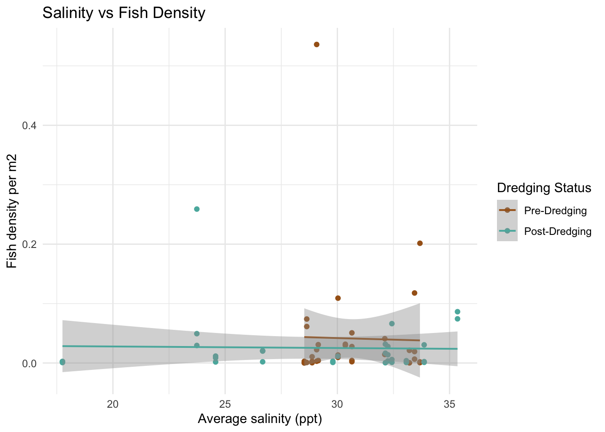

See code
# Load important packages
library(tidyverse)
library(here)
library(dplyr)
Wetlands are among the most ecologically important ecosystems, providing habitat for a wide range of species, supporting biodiversity, and delivering critical ecosystem services such as flood control and water filtration. In California, wetlands are especially vital due to their rarity and the pressures they face from human development and climate change.
One particularly important wetland is the Carpinteria Salt Marsh, located in southern California. The Carpinteria Salt Marsh Reserve, managed by the University of California, is home to a critically important estuary that supports a variety of sensitive plant and animal species [1]. The marsh encompasses wetland, subtidal channels, and upland habitats, and it serves as a regional nursery for species such as the California halibut. Additionally, it provides refuge for migratory birds and species of special concern. Adjacent to a sandy beach, rocky reefs, and kelp beds, the marsh plays an integral role in the local ecosystem.
In the winter of 2023, severe rain storms deposited a significant amount of sediment into the marsh, requiring emergency dredging operations led by Santa Barbara County Flood Control [2]. While necessary for flood mitigation, dredging can have significant ecological impacts, including increased turbidity, altered hydrology, and stress to plant and animal life [3]. From April to July 2023, a hydraulic dredge operated 24/7 to remove sediment and reduce the risk of flooding to the surrounding area.
Having worked in the Carpinteria Salt Marsh during the fall of 2023 as part of the SONGS Marine Mitigation team, I witnessed firsthand the changes caused by the dredging. Conversations with my colleagues often touched on concerns about the county’s approach to dredging, particularly regarding the lack of consultation with scientists and the arbitrary depth choices made during the operation. These experiences, combined with my curiosity to apply the statistical skills I’ve gained through my stats course (EDS 222), inspired me to explore the question:
Is there a difference in fish abundance between the pre-dredging (2022) and post-dredging (2023) field seasons?

The packages needed for this project in R are here for reading in the data, and tidyverse and dplyr for data cleaning and visualization.
# Load important packages
library(tidyverse)
library(here)
library(dplyr)This data used in this project comes from the SONGS Marine Mitigation database.The SONGS (San Onofre Nuclear Generating Station) San Dieguito Wetland Restoration mitigation monitoring program was designed to evaluate compliance of the restoration project with conditions of the SONGS permit as set out by the California Coastal Commission. To evaluate wetland performance of the restoration site, three comparison sites were selected: Tijuana Estuary, Mugu Lagoon, and Carpinteria Salt Marsh. Since 2012, yearly biological surveys have taken place to quantify water quality parameters and vegetation, fish, and invertebrate populations.
The particular data I selected to use from this database are water quality and fish abundance data [4] [5]. The water quality data contains measurements of temperature, salinity, and dissolved oxygen that were collected by an in situ sensor that records data daily at 15 minute intervals.
The fish abundance data includes the fish sampled during a technique called seining. Seining involves spreading out a fine mesh net to enclose a specific area of the channel or tidal creek and then another net is passed through the enclosed area to collect whichever fish are found on the bottom or in the waterway. Each wetland contained 12 different sites where seining was done; 6 sites were in a main channel and 6 sites in a tidal creek, and every site was sampled three times in one sampling season. I found this to be one of my favorite jobs while working for SONGS. It was really cool to bring the net up and see which kinds of fish were there. My favorite fish we would get were the California halibut and the Pacific staghorn sculpin, but most commonly we would get were topsmelt and California killifish.

If you want to access the data or explore the metadata, use the links below:
# Load in data
water_quality <- read_csv(here('posts', '2024-12-10-fish-stats', 'data', 'wetland_ts_water_quality.csv'))
fish_abund <- read_csv(here('posts', '2024-12-10-fish-stats', 'data', 'wetland_ts_fish_seine.csv'))In order to use the datasets for my analysis, I needed to complete a series of data cleaning tasks. My end goal was to transform the two dataset into one that contained the total number of fish sampled at each site at each day, and the average water quality parameters of that day.
To accomplish this I had to make a series of choices. The first being how to aggregate the water quality data. The sensors collected readings every 15 minutes, resulting in a massive dataset that wasn’t practical for my analysis, especially since I needed to join it with the fish abundance data. One issue I realized was that the fish abundance data gave the date but not the time the fish were sampled. This is where having worked in the field proved invaluable. I decided that if I didn’t have an exact time, I would just find the average of the water quality parameters during the time I knew sampling took place. The time of sampling differed a bit each day of field season because the we had to do the field work during a specific tide window and it had to be during the daylight hours so that we could see (plus my bosses never liked us working too late in the afternoon). This knowledge led me to subset the water quality data from 6 AM until 4 PM, and then I found the average values of that day. While wetlands are a very dynamic environment with water quality parameters often changing quickly with the tides, I thought subsetting to the sampling hours was a bit better than just taking the average of the entire day.
The next choice I had to make was on how I was going to present the fish abundance data. The original dataset included the species of fish and number sampled for each seine haul at every site. For a particular survey date, 2-3 sites would be seined and each site had 6 hauls. Every site had a A side and then a B side directly next to each other. Once the nets were set up, each seine area had 3 hauls of a net being passed through and the contents identified and counted. In order to get the total number of fished sampled at the site, I grouped the data by site (combining A and B) and by the date. This grouping made it easier to merge the fish data with the corresponding water quality data by date.
The last step I decided to take was to find the density of the fish sampled rather than just keep it at total count. My rational with this was that for each seine, the distance across remained the same, but the total length and depth of the water varied by creek width or depth of channel. As the nets were set up and pulled by only six people, we wouldn’t set up the seine in areas were it was too deep to stand as it made it nearly impossible to pull the net across while keeping it in contact with the ground. To standardize for this uneven sampling area, I decide to calculate the total area of water sampled by multiplying the seine dimensions and average depth of the water. Then, I could calculate the density of fish sampled per meter squared by dividing the total fish count by the area. Once I started using this value as my fish abundance variable, I found it was much more consistent across the different sites. Using raw count values without considering the area might have lead to misleading results, as larger sampled areas usually led to higher counts.
Here are the steps I took in my code to clean the data and prepare it for merging:
For Both data sets:
For water quality data:
group_by() function for the date and then summarise() and mean() to find the average value of the daylight hours.For fish abundance data
group_by() and summarise().dredging column that gives a 0 value for the pre-dredging year (2022) and a 1 for the post-dredging year (2023)# ---- Water quality data cleaning
# Filter water quality data
water_quality_clean <- water_quality %>%
filter(year %in% c(2022, 2023)) %>%
filter(wetland_code == "CSM") %>%
select(-c(instrument_type, wetland_code)) %>%
filter(hour(sample_datetime_gmt) >= 6 & hour(sample_datetime_gmt)) %>% # filter to sampling hours
mutate(date = as.Date(sample_datetime_gmt)) # new column with just date
# Calculate averages
water_quality_ave <- water_quality_clean %>%
group_by(date) %>%
summarise(temp_c_mean = mean(temperature_degrees_c),
salinity_ppt_mean = mean(salinity_ppt),
salinity_practical_mean = mean(salinity_practical),
dissolved_oxygen_mean = mean(dissolved_oxygen_concentration_mg_l))
# ---- Fish survey data cleaning
# Filter fish abundance
fish_abund_clean <- fish_abund %>%
filter(year %in% c(2022, 2023)) %>%
filter(wetland_code == "CSM") %>%
select(-c(survey, module_code, seine_section_code, seine_sample_length, seine_sample_width, species_id)) %>% # remove unnecessary columns
mutate(sample_area_m2 = seine_sample_area * depth) %>% # create count per m2
mutate(count_per_m2 = count /sample_area_m2)
# Group by date and site name to get total count of fish sampled
fish_total <- fish_abund_clean %>%
group_by(date, tc_mc_code, habitat_code) %>%
summarise(total_density_per_m2 = sum(count_per_m2, na.rm = TRUE)) %>%
mutate(habitat_code = recode(habitat_code,
"TC" = "Tidal creek",
"BNMC" = "Main channel")
)
# Create a new column for the year
fish_total$year <- year(fish_total$date)
# Create binary column for pre dredging (2022) and post dredging (2023)
fish_total$dredging <- ifelse(fish_total$year == 2023, 1, 0)Now that I have the average water quality values, I joined it with the fish abundance data so that for each sample day, there is corresponding water quality data.
fish_water <- merge(fish_total, water_quality_ave, by="date")When I merged the data it only has 67 rows when I was expecting it to have 72 to match the fish abundance data. As a test, I decided to do a left join of the fish data to keep all its dates intact and discover which dates were missing water quality data.
# Perform a left join
fish_with_water_quality <- fish_total %>%
left_join(water_quality_ave, by = "date")
# Check which rows in fish_total do not have a match in water_quality_ave
missing_dates <- fish_with_water_quality %>%
filter(is.na(temp_c_mean))
# View the missing dates
missing_dates# A tibble: 5 × 10
# Groups: date, tc_mc_code [5]
date tc_mc_code habitat_code total_density_per_m2 year dredging
<date> <chr> <chr> <dbl> <dbl> <dbl>
1 2023-09-06 CSM MC3 Main channel 0.0144 2023 1
2 2023-09-06 CSM MC4 Main channel 0.0292 2023 1
3 2023-09-06 CSM TC3 Tidal creek 0.00594 2023 1
4 2023-09-11 CSM MC2 Main channel 0.00621 2023 1
5 2023-09-11 CSM TC2 Tidal creek 0.0694 2023 1
# ℹ 4 more variables: temp_c_mean <dbl>, salinity_ppt_mean <dbl>,
# salinity_practical_mean <dbl>, dissolved_oxygen_mean <dbl>The test showed that there was no water quality data for the dates 2023-09-06 and 2023-09-11. This meant that for 5 fish collection dates in the 2023 field season, there was no water quality data to accompany it. After checking the original water quality data it showed that there is a gap in data from 09-10 until 09-14. I couldn’t find a way to get that missing data, so I was forced to just exclude those sample dates from my analysis. It is important to recognize that any plots or tests in the rest of the project are comparing 36 sites for 2022 and 31 sites for 2023. While this is not ideal, I felt it was a small enough difference that I went on with my analysis.
After the data was cleaned, I created some plots to compare the fish density between the two years and see if there is a potential relationship with the water quality parameters.
The log scale was applied to the y-axis because the data contains a wide range of fish density values, including many small values and only a few larger ones. This disparity can make it difficult to distinguish differences in densities, as the larger values dominate the visualization. The log transformation compresses the range of values, allowing for better visualization of variations while maintaining the relative differences.
# Box plot of fish density (log scaled)
ggplot(fish_total, aes(x = factor(year), y = total_density_per_m2, fill = factor(year))) +
geom_boxplot() +
scale_fill_manual(values = c("#8C510A", "#01665E")) +
scale_y_log10() + # Apply log scale to y-axis
labs(
title = "Fish Total Density per m² (Log Scale)",
x = "Year",
y = "Total Density per m² (log scale)",
fill = "Year"
) +
theme_minimal() +
theme(plot.title = element_text(hjust = 0.5))
Looking at the two box plots, the overall range of the values seemed to be pretty similar. I would assume just based on this that there is no difference in the fish density between 2022 and 2023, but the linear models would give a better understand if that is true.
To explore if the water quality parameter (temperature, salinity, and dissolved oxygen) had a potential relationship with fish density, each variable is plotted against the fish densities and a linear model line was included to view the general trends.
# ---- Fish density vs. each water quality variable
# water temp
ggplot(fish_water, aes(x = temp_c_mean, y = total_density_per_m2, color = factor(dredging))) +
geom_point(alpha = 0.7) +
geom_smooth(method = "lm", se = TRUE, lwd = 0.7) +
scale_color_manual(values = c("0" = "#A6611A", "1" = "#5AB4AC"),
labels = c("Pre-Dredging", "Post-Dredging")) +
labs(color = "Dredging Status",
x = "Average water temperature (C)",
y = "Fish density per m2",
title = "Water Temp vs Fish Density") +
theme_minimal()
# dissolved oxygen
ggplot(fish_water, aes(x = dissolved_oxygen_mean, y = total_density_per_m2, color = factor(dredging))) +
geom_point(alpha = 0.7) +
geom_smooth(method = "lm", se = TRUE, lwd = 0.7) +
scale_color_manual(values = c("0" = "#A6611A", "1" = "#5AB4AC"),
labels = c("Pre-Dredging", "Post-Dredging")) +
labs(color = "Dredging Status",
x = "Average dissolved oxygen concentration (mg/L)",
y = "Fish density per m2",
title = "Dissolved Oxygen vs Fish Density") +
theme_minimal()
# salinity
ggplot(fish_water, aes(x = salinity_ppt_mean, y = total_density_per_m2, color = factor(dredging))) +
geom_point() +
geom_smooth(method = "lm", se = TRUE, lwd = 0.7) +
scale_color_manual(values = c("0" = "#A6611A", "1" = "#5AB4AC"),
labels = c("Pre-Dredging", "Post-Dredging")) +
labs(color = "Dredging Status",
x = "Average salinity (ppt)",
y = "Fish density per m2",
title = "Salinity vs Fish Density") +
theme_minimal()
The scatter plots do not show a super obvious trend between the water quality variables and the fish density between 2022 and 2023. I did think it was interesting that for the 2022 data, the range of dissolved oxygen and salinity is much more narrow than the 2023 data. I am curious if this might be an indicator to the impacts of the dredging. My hypothesis is the deeper channels caused by the dredging could increase dissolved oxygen by improving water flow and removing organic material and salinity could rise due to enhanced tidal exchange. I can’t tell if that is what happened here by just looking at the data, but it is interesting to consider.
Dependent variable: fish density
Predictors: water quality parameters and binary dredging variable
# Linear regression model of water quality parameters + dredging
abund_model <- lm(total_density_per_m2 ~ temp_c_mean + salinity_ppt_mean + dissolved_oxygen_mean + dredging, data = fish_water)
summary(abund_model)
Call:
lm(formula = total_density_per_m2 ~ temp_c_mean + salinity_ppt_mean +
dissolved_oxygen_mean + dredging, data = fish_water)
Residuals:
Min 1Q Median 3Q Max
-0.04745 -0.03314 -0.01856 -0.00035 0.48831
Coefficients:
Estimate Std. Error t value Pr(>|t|)
(Intercept) -0.2030981 0.2799882 -0.725 0.471
temp_c_mean 0.0120304 0.0125339 0.960 0.341
salinity_ppt_mean -0.0008393 0.0026287 -0.319 0.751
dissolved_oxygen_mean 0.0032059 0.0041702 0.769 0.445
dredging -0.0082092 0.0254714 -0.322 0.748
Residual standard error: 0.07801 on 62 degrees of freedom
Multiple R-squared: 0.02903, Adjusted R-squared: -0.03362
F-statistic: 0.4634 on 4 and 62 DF, p-value: 0.7623Results: No significant (less than 0.05) p-values.
To explore if the effect of water quality differs between pre- and post-dredging periods, I included interaction terms:
Dependent variable: fish density
Predictors: water quality parameters with dredging interaction
# Linear model with interactions between water quality & dredging
model_interaction <- lm(total_density_per_m2 ~ temp_c_mean * dredging + salinity_ppt_mean * dredging + dissolved_oxygen_mean * dredging, data = fish_water)
summary(model_interaction)
Call:
lm(formula = total_density_per_m2 ~ temp_c_mean * dredging +
salinity_ppt_mean * dredging + dissolved_oxygen_mean * dredging,
data = fish_water)
Residuals:
Min 1Q Median 3Q Max
-0.05947 -0.03000 -0.01833 -0.00420 0.47359
Coefficients:
Estimate Std. Error t value Pr(>|t|)
(Intercept) -0.341131 0.427079 -0.799 0.428
temp_c_mean 0.020148 0.019296 1.044 0.301
dredging 0.198173 0.602258 0.329 0.743
salinity_ppt_mean -0.003265 0.008626 -0.379 0.706
dissolved_oxygen_mean 0.012797 0.020352 0.629 0.532
temp_c_mean:dredging -0.011827 0.027544 -0.429 0.669
dredging:salinity_ppt_mean 0.002842 0.009121 0.312 0.756
dredging:dissolved_oxygen_mean -0.010560 0.020842 -0.507 0.614
Residual standard error: 0.07962 on 59 degrees of freedom
Multiple R-squared: 0.03749, Adjusted R-squared: -0.0767
F-statistic: 0.3283 on 7 and 59 DF, p-value: 0.9381Results: No siginificant p-values.
I did not find statistically significant relationships between fish density and water quality parameters (temperature, dissolved oxygen, salinity) or dredging activity. This suggests these factors may not have had a strong or measurable impact on fish density in my dataset.
Now, lets see more simply if there is a difference in fish density between the two years separate of the water quality variables:
Dependent variable: fish density
Predictor: binary dredging variable
# Linear regression of fish density with only dredging as a factor
model_dredging <- lm(total_density_per_m2 ~ dredging, data = fish_water)
summary(model_dredging)
Call:
lm(formula = total_density_per_m2 ~ dredging, data = fish_water)
Residuals:
Min 1Q Median 3Q Max
-0.04130 -0.03134 -0.02207 -0.00260 0.49472
Coefficients:
Estimate Std. Error t value Pr(>|t|)
(Intercept) 0.04130 0.01282 3.222 0.00199 **
dredging -0.01582 0.01884 -0.839 0.40429
---
Signif. codes: 0 '***' 0.001 '**' 0.01 '*' 0.05 '.' 0.1 ' ' 1
Residual standard error: 0.0769 on 65 degrees of freedom
Multiple R-squared: 0.01073, Adjusted R-squared: -0.004494
F-statistic: 0.7047 on 1 and 65 DF, p-value: 0.4043Result: p-value is 0.40429. This is not a significant p-value which means we do not have strong evidence that there is a difference in fish abundances between 2022 and 2023.
The results of my analysis suggest that the factors I considered may not have had a strong or measurable impact on fish density in this dataset. However, this does not necessarily mean there is no relationship—it simply means that, with the current dataset, model, and variables, I did not find evidence to support one. It is likely that other unmeasured variables play a more significant role in influencing fish densities.
One limitation of this study is the timing of the sampling. Since the data was collected during an annual field season between July and September, any short-term impacts of dredging may have dissipated by the time of sampling. A more focused dataset, capturing conditions immediately before, during, and after dredging, could provide a clearer picture of its effects. Additionally, the sample size—36 points in 2022 and 31 in 2023—may not have been sufficient for detecting subtle changes in fish density. While larger datasets would provide more robust insights, I now have a much deeper appreciation for the effort required to collect each data point. Having been part of the fieldwork team, I understand the physical and logistical challenges of collecting this data, often under harsh conditions. This perspective reminds me to respect the immense effort behind every dataset used in an analysis.
Finally, while insignificant p-values can be disappointing, the results of this study might indicate something positive: there may truly be no significant difference in fish densities between the pre- and post-dredging field seasons. This could suggest that dredging did not negatively impact fish populations in the salt marsh. If given more time, it would be valuable to complement this study with an analysis on the sessile organisms that live in the marsh which could not move out of the path of the dredge and may have been more directly affected.
To check out more of my analysis, see my GitHub Repository for this project.
@online{sibley2024,
author = {Sibley, Jordan},
title = {Exploring the {Impacts} of {Dredging} on {Fish} {Abundance}},
date = {2024-12-03},
url = {http://jordancsibley.github.io/posts/2024-12-10-fish-stats/},
langid = {en}
}